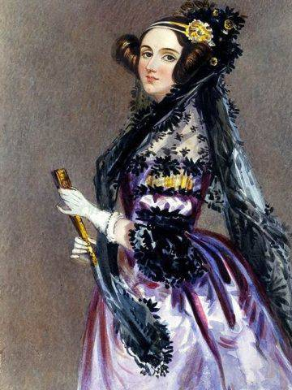
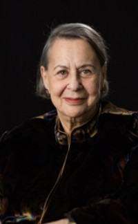
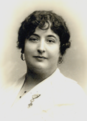

ADA LOVELACE

Ada Augusta Byron nació en Londres en 1815. Era hija de la adinerada Annabella Milbanke y el poeta Lord Byron. El matrimonio no duró mucho y, cuando Ada tenía un mes, su madre abandonó a su esposo. La joven Ada recibió lecciones de matemáticas y ciencia en un intento, por parte de su madre, de erradicar la herencia de locura poética que llevaba en los genes. Su infancia transcurrió entre tutores y estudios, lastrada por una mala salud que arrastraría a lo largo de toda su vida.
A pesar de que en siglo XIX no era frecuente que las mujeres estudiasen ciencia, Ada tuvo la suerte de contar con grandes maestros, como el matemático Augustus De Morgan o la astrónoma escocesa Mary Somerville. Fue precisamente Sommerville quien le presentó al matemático Charles Babbage, con quien trabó una gran amistad y una fructífera colaboración. En 1835 Ada se casó con el barón William King, que posteriormente se convirtió en conde de Lovelace. Durante su matrimonio siguió estudiando matemáticas. Tras el nacimiento de su tercer y último hijo, Ada comenzó a colaborar con Babbage en la máquina analítica.
Su pasión por las matemáticas y su personalidad poco convencional no siempre fueron bien vistas en la corte. Se aficionó al juego y en 1851 trató de crear con unos amigos un modelo matemático para acertar en las apuestas. En los últimos años de su vida su salud se deterioró gravemente, hasta que falleció en 1852, poco antes de cumplir 37 años.
EVELYN BEREZIN

Evelyn Berezin nació en Nueva York el 12 de abril de 1925. De pequeña leía en casa las revistas de ciencia ficción Astounding Science que compraba su hermano. Tras terminar sus estudios secundarios a la edad de 15 años, ingresó en el Hunter College, integrado en la Universidad de Nueva York, donde pudo matricularse en Ciencias Empresariales, que era, según confesó, lo más próximo a la Física entre las materias que podía elegir. El advenimiento de la II Guerra mundial cambió la trayectoria de su vida. La mayoría de los estudiantes varones fueron llamados a filas y el vacío dejado en las distintas facultades permitió cambiarse de una a otra. Fue admitida en la facultad de Física y Química, asistió a las clases nocturnas, recibió una beca de la Comisión de Energía Atómica y se doctoró en Física de Rayos Cósmicos en 1945. Cursó asimismo Matemáticas en el Politécnico de Brooklyn, donde era la única mujer.
Puesto que los únicos puestos vacantes en el mercado laboral se encontraban en el campo de la informática, comenzó a trabajar en procesamiento de datos.
En 1951 Evelyn Berezin se casó con Israel Wilenitz. En ese mismo año fue contratada por la Electronic Computer Corporation (Elecom) en Brooklyn para que 'diseñara un ordenador'. El resultado fue la máquina Elecom200. En 1953 la compra de Electronic Computer Corporation por parte de Underwood Typewriter Company propició que Evelyn Berezin se convirtiera en directora del departamento de diseño de lógica, donde creó lo que se considera el primer ordenador de oficina, que nunca llegó a comercializarse por la adquisición de Underwood por Olivetti en 1959.
CARMEN DE BURGOS

Carmen de Burgos Seguí. (Rodalquilar –Almería–, 10 de diciembre de 1867 – Madrid, 9 de octubre de 1932). Periodista, escritora, traductora, pedagoga y activista. Firma bajo el pseudónimo de Colombine.
Se casa a los 16 años y tiene tres hijos. Tras el fallecimiento de dos de ellos y tras su divorcio, parte hacia Madrid donde desarrolla su preocupación por los grupos sociales menos favorecidos.
Implicada en la causa republicana, lucha por los derechos de las mujeres y los niños, la oposición a la pena de muerte, el divorcio y el sufragio universal. Esta lucha se ve materializada en 1920 con la creación de la Cruzada de las Mujeres Españolas. Llega a presidir la Liga Internacional de Mujeres Ibéricas e Hispanoamericanas.